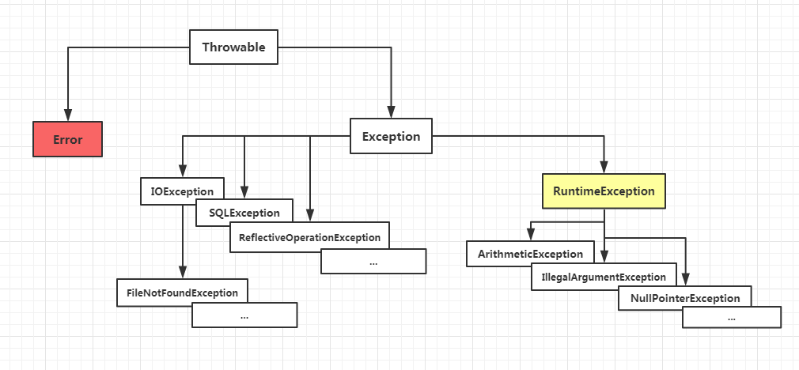

异常是程序中的一些错误 , 但并不是所有的错误都是异常 , 并且错误有时候是可以避免的 ;
比如说 , 你的代码少了一个分号 , 那么运行出来结果是提示是错误 java.lang.Error；如果你用 System.out.println(11/0) , 那么你是因为你用 0 做了除数 , 会抛出 java.lang.ArithmeticException 的异常 ;
异常发生的原因有很多 , 通常包含以下几大类 :
这些异常有的是因为用户错误引起 , 有的是程序错误引起的 , 还有其它一些是因为物理错误引起的 ; 要理解 Java 异常处理是如何工作的 , 你需要掌握以下三种类型的异常 :
所有的异常类是从 java.lang.Exception 类继承的子类 ;
Exception 类是 Throwable 类的子类 ; 除了 Exception 类外 , Throwable 还有一个子类 Error ;
Java 程序通常不捕获错误 ; 错误一般发生在严重故障时 , 它们在 Java 程序处理的范畴之外 ;
Error 用来指示运行时环境发生的错误 ; 例如 JVM 内存溢出 ; 一般地 , 程序不会从错误中恢复 ;
异常类有两个主要的子类 : 检查性异常类 和 运行时异常类 (RuntimeException) ;

在 Java 中所有不是 RuntimeException 派生的 Exception 都是检查型异常 ; 当函数中存在抛出检查型异常的操作时该函数的函数声明中必须包含 throws 语句 ; 调用改函数的函数也必须对该异常进行处理 , 如不进行处理则必须在调用函数上声明 throws 语句 ;
检查型异常是 Java 首创的 , 在编译期对异常的处理有强制性的要求 ; 在 JDK 代码中大量的异常属于检查型异常 , 包括 IOException , SQLException 等等 ;
在 Java 中所有 RuntimeException 的派生类都是非检查型异常 , 与检查型异常对比 , 非检查型异常可以不在函数声明中添加 throws 语句 , 调用函数上也不需要强制处理 ;
常见的 NullPointException , ClassCastException 是常见的非检查型异常 ; 非检查型异常可以不使用 try...catch 进行处理 , 但是如果有异常产生 , 则异常将由 JVM 进行处理 ; 对于 RuntimeException 的子类最好也使用异常处理机制 ; 虽然 RuntimeException 的异常可以不使用 try...catch 进行处理 , 但是如果一旦发生异常 , 则肯定会导致程序中断执行 , 所以为了保证程序再出错后依然可以执行 , 在开发代码时最好使用 try...catch 的异常处理机制进行处理 ;
public class ExceptionTypeTest {
public void doSomething() throws ArithmeticException{
System.out.println();
}
public static void main(){
ExceptionTypeTest ett = new ExceptionTypeTest();
ett.doSomething();
}
}
解答 : 能编译通过 ;
分析:按照一般常理 , doSomething 方法是定义了 ArithmeticException 异常 , 在 main 方法里面调用了该方法 ; 那么应当继续抛出或者捕获一下 ; 但是 ArithmeticException 异常是继承 RuntimeException 运行时异常 ; Java 里面异常分为两大类 : CheckedException (检查异常) 和 UncheckedException (未检查异常) , 对于未检查异常也叫 RuntimeException (运行时异常) , 对于运行时异常 , Java 编译器不要求你一定要把它捕获或者一定要继续抛出 , 但是对 CheckedException (检查异常) 要求你必须要在方法里面或者捕获或者继续抛出 ;
解答 : 不能编译通过 ;
分析 : IOException extends Exception 是属于 CheckedException , 必须进行处理 , 或者必须捕获或者必须抛出 ;
对未检查的异常 (UncheckedException) 的几种处理方式 :
对检查的异常 (CheckedException) 的几种处理方式 :
// 文件名 : ExcepTest.java
import java.io.*;
public class ExcepTest{
public static void main(String args[]){
try{
int a[] = new int[2];
System.out.println("Access element three :" + a[3]);
}catch(ArrayIndexOutOfBoundsException e){
System.out.println("Exception thrown :" + e);
}
System.out.println("Out of the block");
}
}
一个 try 代码块后面跟随多个 catch 代码块的情况就叫多重捕获
try
{
file = new FileInputStream(fileName);
x = (byte) file.read();
}catch(IOException i)
{
i.printStackTrace();
return -1;
}catch(FileNotFoundException f) //Not valid!
{
f.printStackTrace();
return -1;
}
如果一个方法没有捕获一个检查性异常 , 那么该方法必须使用 throws 关键字来声明 , throws 关键字放在方法签名的尾部 ;
也可以使用 throw 关键字抛出一个异常，无论它是新实例化的还是刚捕获到的。
import java.io.*;
public class className{
public void deposit(double amount) throws RemoteException,
InsufficientFundsException{
// Method implementation
throw new RemoteException();
}
//Remainder of class definition
}
finally 关键字用来创建在 try 代码块后面执行的代码块 ;
无论是否发生异常 , finally 代码块中的代码总会被执行 ;
在 finally 代码块中 , 可以运行清理类型等收尾善后性质的语句 ;
finally 代码块出现在 catch 代码块最后 , 语法如下 :
public class ExcepTest{
public static void main(String args[]){
int a[] = new int[2];
try{
System.out.println("Access element three :" + a[3]);
}catch(ArrayIndexOutOfBoundsException e){
System.out.println("Exception thrown :" + e);
}
finally{
a[0] = 6;
System.out.println("First element value: " +a[0]);
System.out.println("The finally statement is executed");
}
}
}